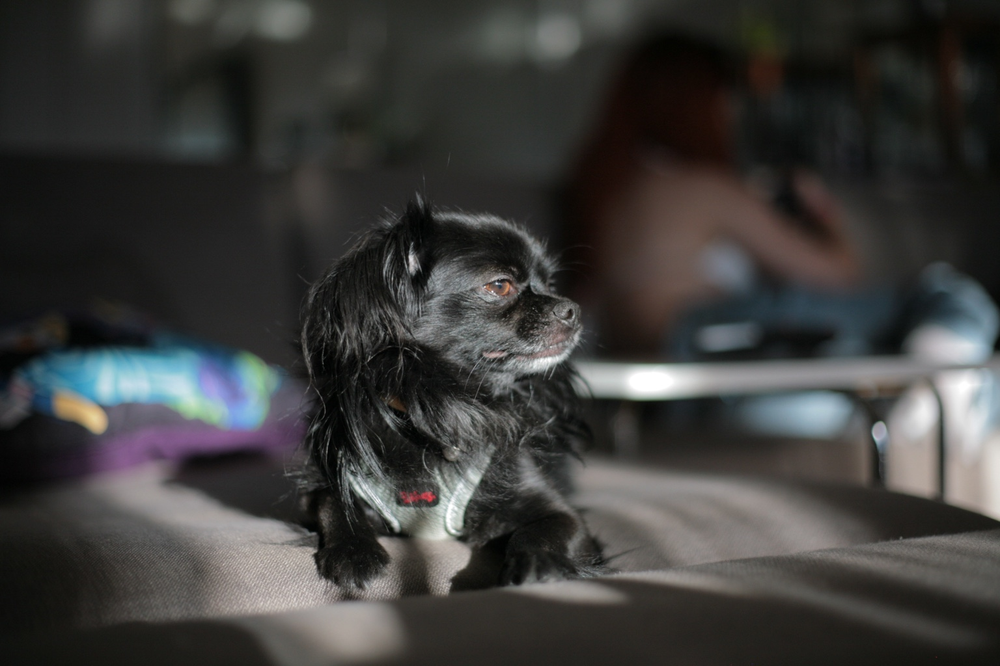
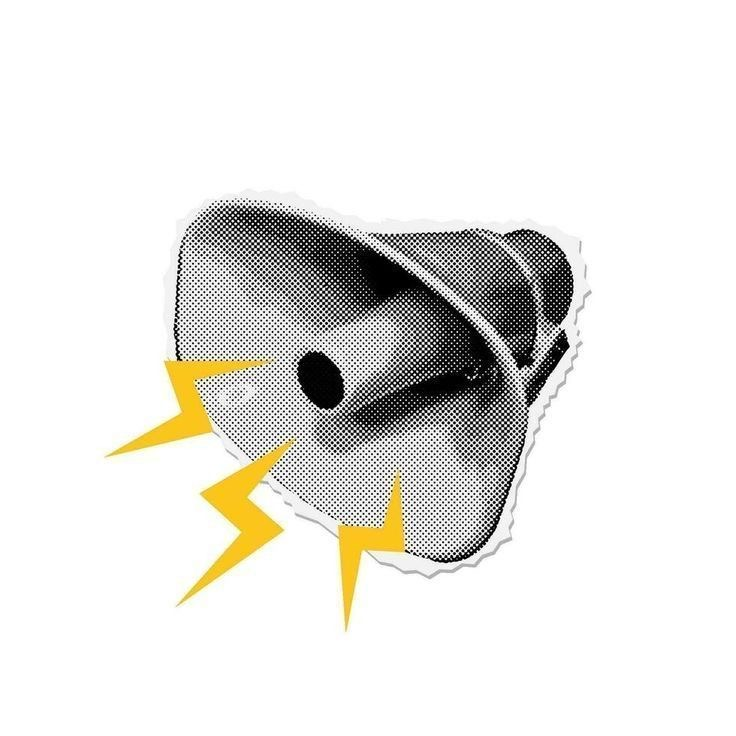
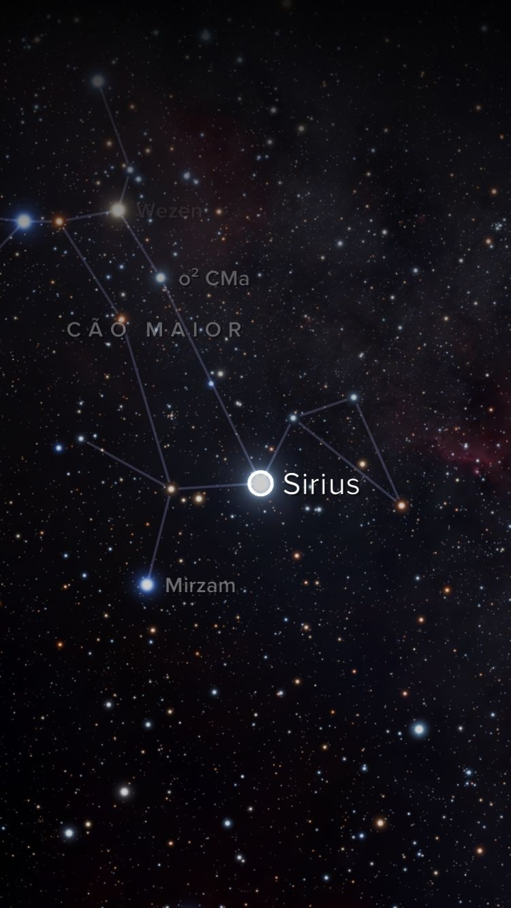
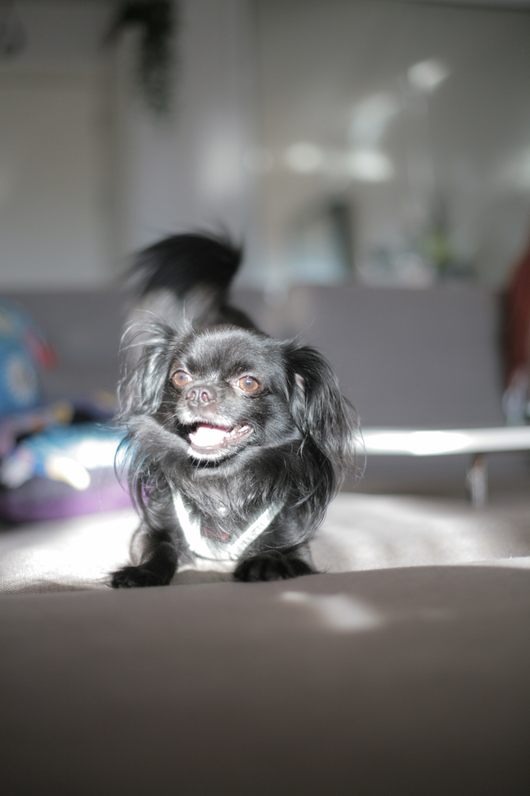
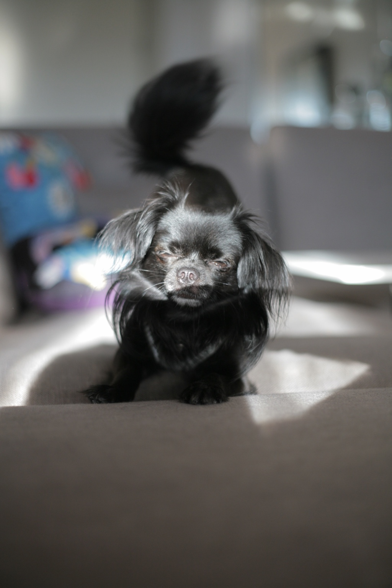
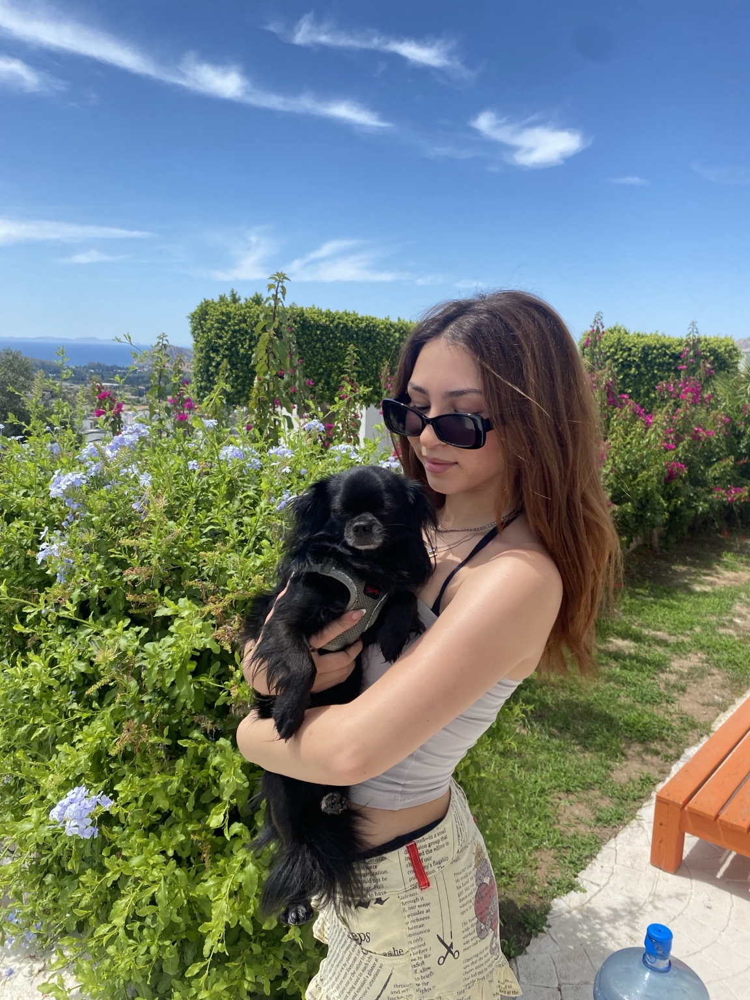
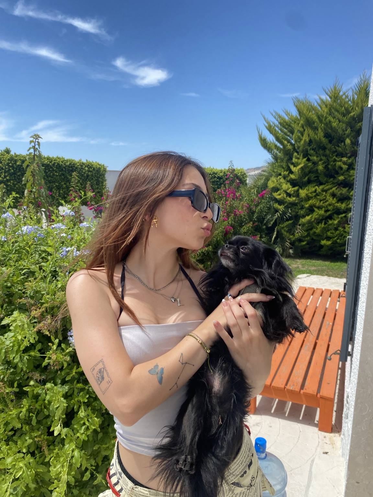

Qui est Sirius ? 🐾
Sirius est un chihuahua à poil long de 5 ans. C’est un chien joueur, affectueux et très attaché à sa famille. Il adore les câlins, les promenades et surtout être au centre de l’attention.
Récemment, Sirius a pris un peu de poids et pèse environ 7 kg, mais cela ne l’empêche pas d’être un compagnon plein d’amour, de douceur et de bonne humeur. Avec ses grands yeux brillants et son petit air de diva, il sait toujours comment se faire remarquer.


Sa personnalité de mini star
Sirius a une vraie énergie de star des années 2000 : un peu drama, très photogénique, et toujours prêt à voler la vedette. Il aime qu’on le regarde, qu’on lui parle, et bien sûr qu’on lui dise qu’il est le plus beau.
- Son activité préférée : recevoir des câlins.
- Son mood quotidien : petit prince de la maison.
- Son talent caché : poser pour les photos comme un mannequin.
- Son obsession : suivre sa famille partout.
- Son style : poil noir brillant, regard intense et attitude de célébrité.
Pourquoi il s’appelle Sirius ? 🌟
Sirius porte le nom de l’étoile Sirius, l’étoile la plus brillante du ciel nocturne. Elle fait partie de la constellation du Grand Chien. Ce nom lui va parfaitement, parce que même s’il est petit, il brille énormément dans la vie de sa famille.
Comme l’étoile, Sirius attire l’attention naturellement. Il a une présence spéciale, une énergie lumineuse et un petit côté mystérieux qui le rend unique.

Une journée dans la vie de Sirius
Le matin, Sirius aime se réveiller doucement, observer tout le monde et attendre son moment câlin. Ensuite, il inspecte la maison comme un petit chef de sécurité. L’après-midi, il adore les balades, les siestes au soleil et les moments photo. Le soir, il redevient le bébé de la famille et cherche le meilleur endroit pour dormir.
Galerie photo 📸



